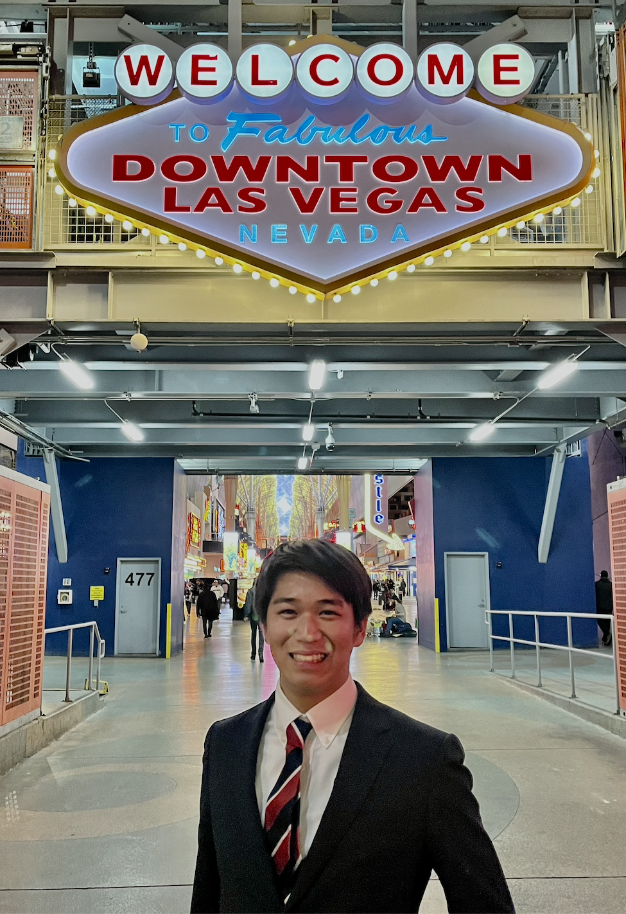

Go Okuno
Major:Economics Year:Junior
Hi! I'm an exchange student from Keio University in Japan. I like soccer and rugby. I belong to Cal Quidditch club. I live at International House Berkeley!
- The dining hall at ihouse
- Marugame
- Imm Thai Street

Nagoya Grampus
- Q.1 I learned how I can learn from web sites that I usually see. I could imagine how I develop my design skills.
- Q.2 My favorite thing of this article is her way of teaching. She mentioned not only things that I need to know, but also how I can acuire these skills.
- Q.3 "Know the rules, so you can break em"
- Q.4 7